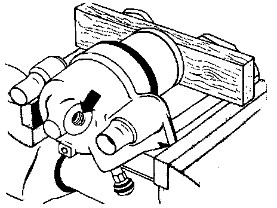
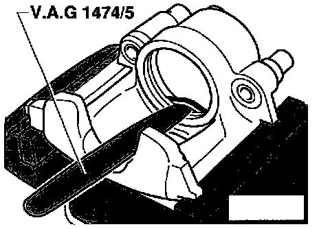
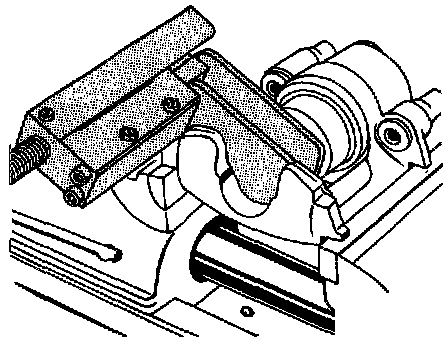

VW II Caliper

Component Notes And Information
NOTE:
^ Suring service procedures, refer to the illustration above and the information below.
^ When repairing, apply a thin coat of brake fluid to cylinders, pistons and seals.
^ Install all parts in repair kit
^ During removal and installation procedures, refer to the component location illustration above and component notes below
1 Dust boot
- Do not damage when installing piston
2 Piston
- Removing and installing, refer to procedures below
- Coat lightly with brake fluid before installing
3 Brake caliper
4 Piston seal
- Remove using modified VAG 1474/5, refer to procedures below
Removal
CAUTION:
^ Place a wooden block in the caliper to prevent damage to the piston.
^ Use only enough air pressure to force the piston out.

- Force piston out of caliper using compressed air.
WARNING: Always wear safety goggles when working with compressed air.

- Carefully remove piston seal using modified wedge VAG 1474/5.
CAUTION: When removing, use care to ensure that the cylinder bore is not damaged

Modifying Wedge Tool No. VAG 1474/5
- Reshape wedge point size in area -a-.
Width -b- = 6 mm (1/4 inch)
- Reshape wedge point to length -c-.
Length -c- = 10 mm (3/8 inch)
- Remove burrs from point of modified wedge.
Installation

- Install dust cap onto piston.
- Install new piston seal in caliper.

- Lubricate piston and cylinder bore lightly using brake fluid.
- Hold piston in front of caliper and push inner sealing lip into cylinder groove using VAG 1474/5.

- Press piston into caliper.
Outer lip of dust boot must slip into groove in piston